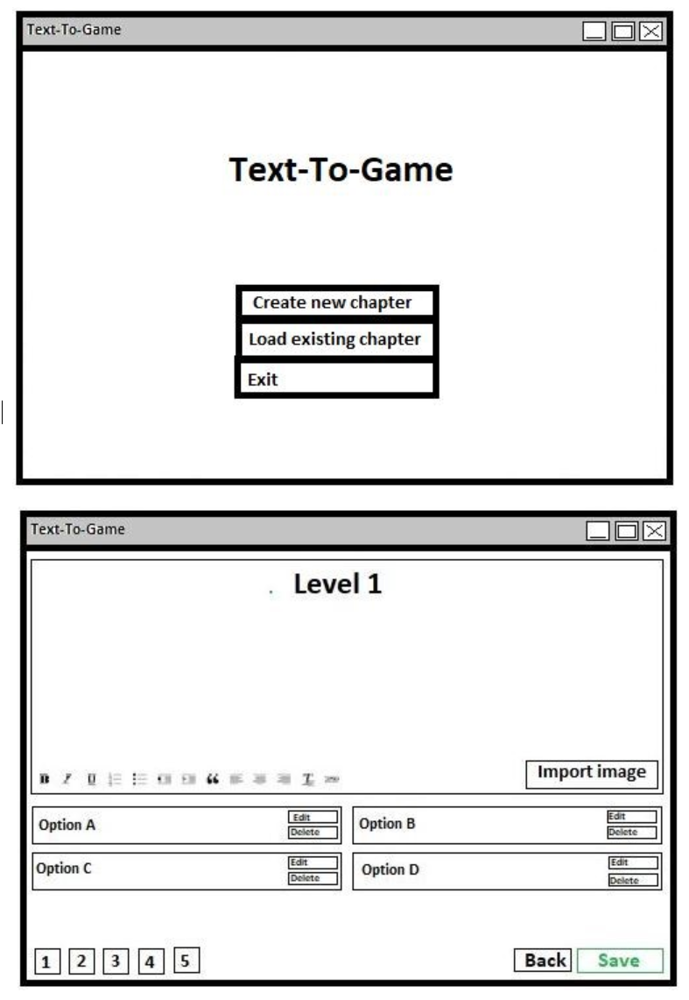

This is a mock-up of what the graphical interface would look like. The user would press on the ‘Create new chapter’ button to be taken to the following screen where they are able to customize their own chapter with images, text, and pathways.
The user would press on the ‘edit’ button for one of the options in which they are taken to the following screen where they are able to input their own options. This allows the author to customize what the options are and the pathways that the user will take as they play the game.
The user would press the ‘View all’ button which would take them to the following page. This page shows all the stories and their chapters in which the author is able to individually select which chapter or story they would like to view.
The user would press the ‘Save’ button which would then open the following textbox asking if they would like to save.